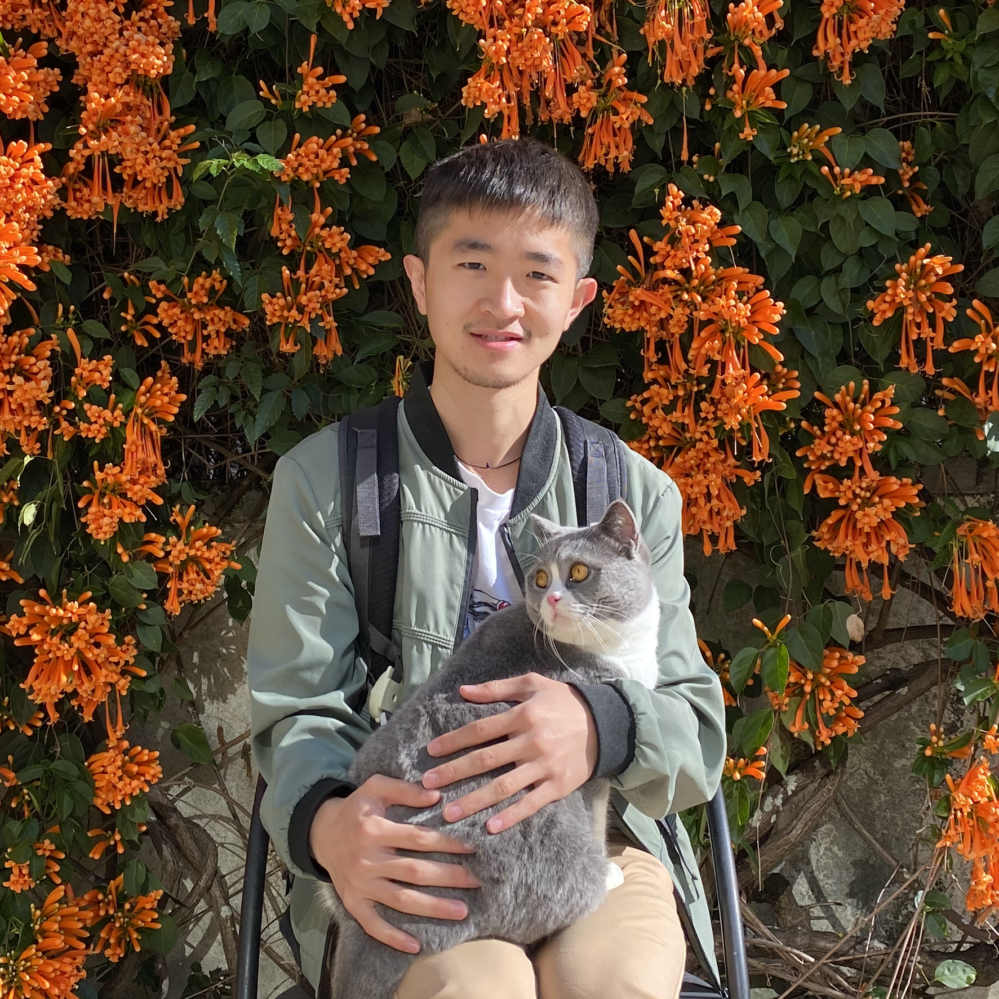

M.Phil. in CSE
CUHK

I'm joining the theory group at Cal this fall, after obtaining my M.Phil. in CSE at the Chinese University of Hong Kong (Jul. 2021) and my B.Eng. in CS from Tsinghua University (Jul. 2019).
During my M.Phil. study, I was fortunate to be advised by Prof. Siuon Chan and Prof. Chandra Nair.
My research interest lies in the connections between stochastic processes and computation. I'm also interested in learning theory.